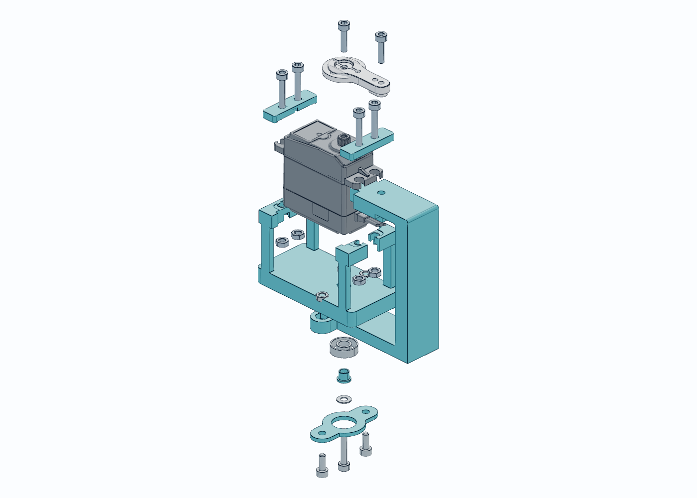
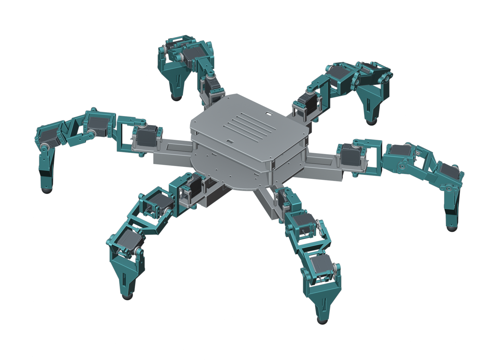
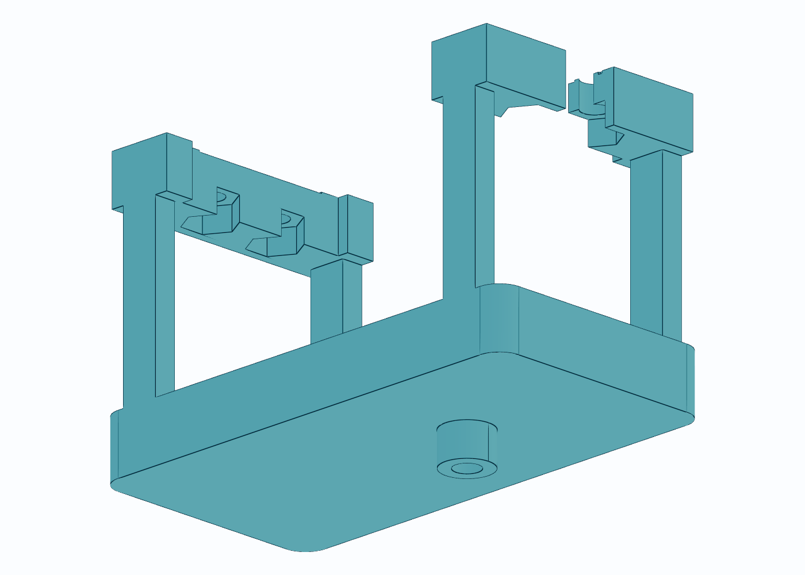
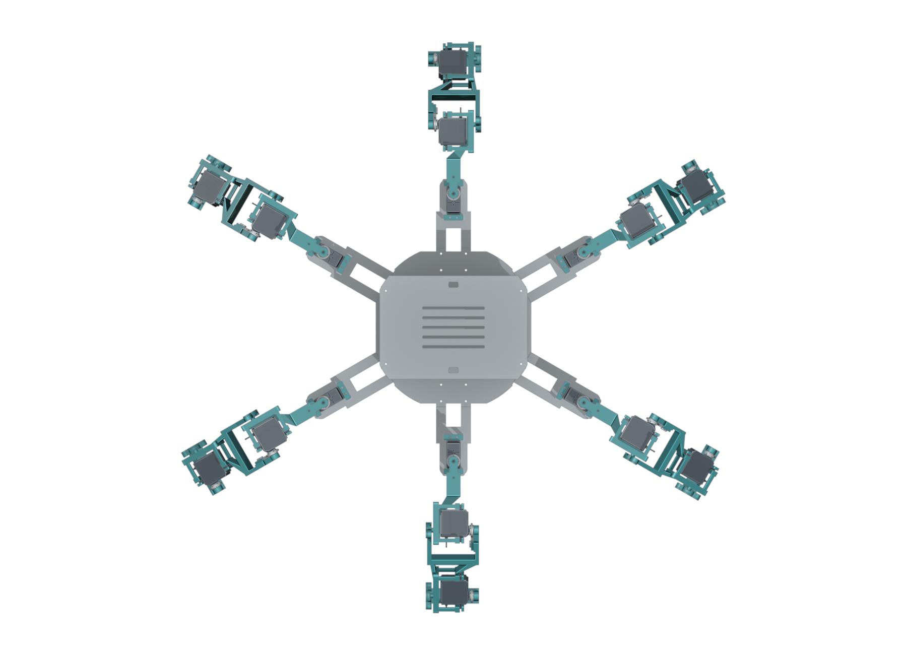
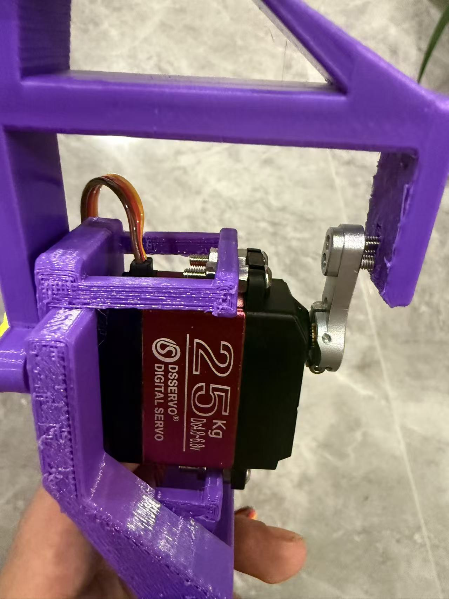

双侧支撑，明确受力路径
驱动侧金属舵盘承担转矩，另一侧 695 轴承提供支撑；将相对静止的梁、肋和安装框合并，减少装配零件。

腿部继承 V12。轴承内外圈需按设计分工，不能锁死旋转件。PERSONAL ENGINEERING PROJECT / 01
围绕真实舵机、打印工艺和装配反馈，迭代一套可拆装、可验证的十八自由度机构。

01 / MECHANICAL DESIGN
基于已有舵机与控制硬件，参考开源六足布局进行机械重设计。以下展示结构决策及其验证边界，不把设计目标当作性能成绩。
驱动侧金属舵盘承担转矩，另一侧 695 轴承提供支撑；将相对静止的梁、肋和安装框合并，减少装配零件。

腿部继承 V12。轴承内外圈需按设计分工，不能锁死旋转件。打印连接面贴合金属舵盘，中心孔与外侧孔直接拧入已确认的 M3 螺纹；舵机四个耳孔使用压片和可从侧面装入的防转螺母槽。

中心螺纹深度 8 mm 为用户测量值。预紧、螺纹啮合与防松仍需实装复核。保留六个髋根坐标，缩小上盖和托盘。立柱采用两端独立螺母，拆下四颗短螺丝即可移走上盖，下层支撑保持紧固。

机身真实外廓约 427.8 × 430.0 × 104.4 mm；上盖缩小不等于髋根间距缩小。02 / KINEMATICS LAB
直接驱动 V13 原始零件网格，不用简化机器人替代。这里是刚体运动学演示，不包含接触动力学、摩擦或步态稳定性求解。
用户确认：180°舵机。安装目标：行程中点对应大腿水平；实际零位、方向和端点尚未标定。
几何采样证据载入中…
180°是电机行程，不是整机无干涉承诺。这里只预览安装目标，可能出现机构碰撞或足端穿地；不能直接用于实机控制。髋偏航与膝关节仍保留原检查区间。下载单腿采样记录
03 / FINITE ELEMENT ANALYSIS
真实 STEP → Gmsh 体网格 → 二次位移四面体 → 稀疏线弹性求解。四耳孔近似刚性舵机外壳，支撑轴承独立传力；网格、载荷、约束与残差均可追溯。
载荷与位移按线弹性关系缩放，并非逐次重新求解。应力不随 E 同比变化。大变形、接触滑移和失效后不适用。
加载解析梁对照数据…
对孔和薄壁保留真实几何；比较粗细网格的位移、应力和体积误差。约束边缘与理想化接触附近的峰值不能直接用于判断破坏。
| 工况 | 单元数 | 位移 mm | 位移变化 | 峰值应力变化 |
|---|
仅做两级网格对比，非完整收敛研究。大腿细网格仍有 2 个 SICN < 0.01 的低质量单元，峰值应力不可用来认证破坏载荷。位移差小于 5% 也不代表结构安全。
04 / PAYLOAD ENVELOPE
目标曾设为额外负载 5 kg。当前不能证明达到：自重未知，舵机持续力矩未验证，打印材料许用应力未测定。
按舵机标签 25 kg·cm 换算 2.45 N·m，髋关节水平力臂 226 mm。这个数包含机器人自身重量，并且忽略腿自重力矩、动态冲击和分载不均，不是可用额外载荷，更不是推荐工作点。
M总 ≤ 3 × 2.4517 / (9.80665 × 0.226) ≈ 3.32 kg
净载荷估算 = 总质量理论上限 − 实测自重；若结果为负，说明该姿态连自重目标也需复核。不能以空载动画替代加载实测。
05 / EVIDENCE & SCOPE
结构来源：本地 V13 主装配与其保留的 V12 腿部 STEP。形态参考 原六足项目；并非将原作者控制方案宣称为本项目原创。
方法参考：Gmsh 官方手册、scikit-fem 官方文档。PETG 不同方向性质不能混用；制造商资料仅作材料背景，不是手头耗材的标定值。
本次网页、计算脚本及工程说明由 AI 辅助生成；作品中涉及个人能力与经历，请按真实参与情况陈述。查看 有限元汇总。
FROM PHYSICAL FEEDBACK TO CAD
早期打印件试装暴露出两类问题：打印腿架与金属舵盘之间存在间隙，舵机耳座的螺母和长螺丝不便操作。后续迭代围绕贴合受力面、M3 直接螺纹连接及螺母进入路径展开。
右图为用户提供的早期试装照片，不是 V13 实物，也不是 PETG 90% 填充承载验证。最新版是否达到预期，需要按报告中的加载步骤重新检验。
